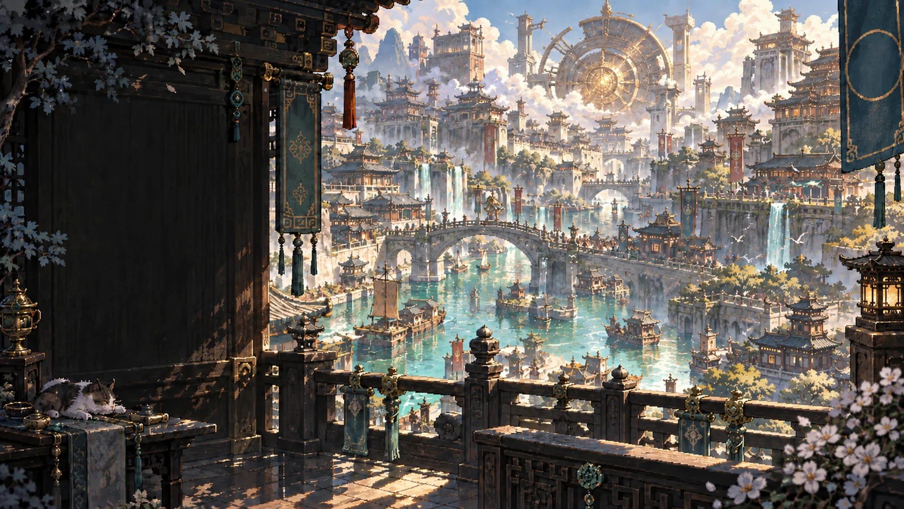
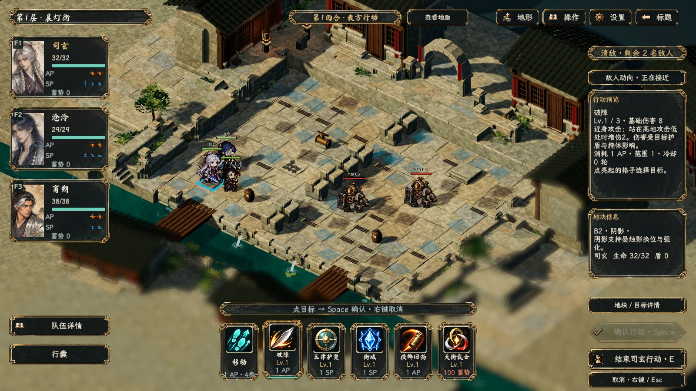

让地形成为招式的一部分
利用高低差、水雾和阴影；读懂敌方意图，再决定走位、控制与出手顺序。每位角色单独结束行动，队伍配合由你掌握。

首个公开 Beta · 开源战棋 Roguelike
D I C E B O U N D
在山海与机关交织的曜京，选定同行者，借地势、连招与旧物破局。每一层的选择，都让队伍走向不同的可能。
Windows x64Beta 1 · 0.22.4单人游戏 · 简体中文
01 / 登阙之旅
先读懂战场，再打出你的解法。
一场攀登，连起战术与构筑。

利用高低差、水雾和阴影；读懂敌方意图，再决定走位、控制与出手顺序。每位角色单独结束行动，队伍配合由你掌握。
领悟角色专属技能，重复获得时提升等级。商店重随、旧物搭配与事件抉择，让同一队伍也能有不同打法。
穿过普通战、精英、商店、事件与营火，迎接顶层决战。四档试炼：踏岚、破障、逆潮、登阙。
02 / 同行者
每个人都有自己的招式与职责。
选择一位同行者，认识队伍的不同可能。
以衡域约束敌人，以玉律护契守护同伴。控制、护盾与裁断相互衔接，为队伍创造从容出手的机会。
OPEN SOURCE / OPEN JOURNEY